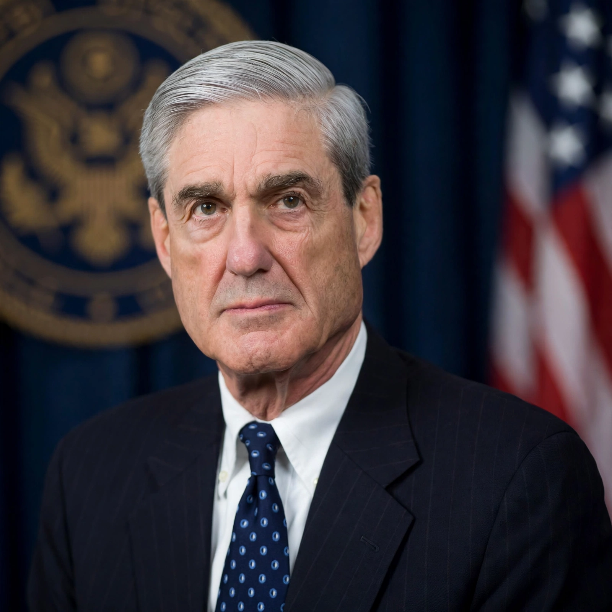

Robert Swan Mueller III (born August 7, 1944) is an American lawyer who served as the sixth director of the Federal Bureau of Investigation (FBI) from 2001 to 2013 and as special counsel overseeing an investigation into Russian interference in the 2016 United States elections from 2017 to 2019.
Mueller was born in Manhattan and raised in Princeton, New Jersey. He graduated from Princeton in 1966 and served as a Marine Corps officer in Vietnam, receiving the Bronze Star and Purple Heart. He earned his law degree from the University of Virginia in 1973.
Mueller worked as a litigator and then as a federal prosecutor, serving as United States Attorney for the Northern District of California and overseeing cases including the Lockerbie bombing investigation as head of the Justice Department's Criminal Division.
Nominated by President George W. Bush, Mueller took office a week before the September 11 attacks and led the FBI's transformation toward counterterrorism and intelligence. His ten-year term was extended by two years by President Barack Obama; he was succeeded by James Comey.
In May 2017 Deputy Attorney General Rod Rosenstein appointed Mueller to investigate Russian interference, possible links with the campaign of Donald Trump, and related matters. The 2019 Mueller report documented extensive Russian interference, did not establish a criminal conspiracy by the Trump campaign, and described episodes concerning possible obstruction of justice without exonerating the president.